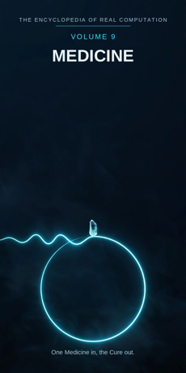

Chron.
The Encyclopedia of Real Computation

One Medicine in, the Cure out.
Home domain: Biology
One Medicine in, the Cure out.
◉ A Principle .... Medicine ◎ B Purpose ...... Healing ◉·◉ A.A Alpha ...... the Physician ◉·◎ A.B Cross ...... the Case △ X Primitive .... Symptoms ⚙ Y Protocol ..... the Examination ⬢ Z Product ...... the Diagnosis ◐ i State ........ the Illness ⚖ j Condition .... the Vitals ⊞ N Set .......... the Systems ◷ h Time ......... the Course ▣ C Context ...... the Clinic ▦ D Domain ....... the Body ♥ E Emotion ...... Compassion ➤ F Intention .... Care ↻ pi Cycle ........ the Rounds ➔ phi Step ......... the Dose ⚄ e Probability .. the Prognosis • h-bar Planck ..... the Pulse
Σ sigma Summation .. the Chart
◈ gamma Scale ...... the Severity Δ delta Change ..... Recovery ⁂ sigma' Options ... the Treatments Ω Omega Answer ..... the Cure
Every volume of this encyclopedia does the same work. The Prologue figures the subject whole. Then come twenty-four chapters, one per term, each doing four jobs in plain English: what the term means, where it sits in the computation, how it works on the volume's one running example, and what breaks without it. Then the Data, whole. Then the Crossings. Then the Sum. The running example of this volume is one patient who comes through the clinic door with a fever and is followed, term by term, to the cure. It is a textbook illustration only: a picture of how the field thinks, not advice for any real illness.
Medicine: the art and science of healing the sick - of reading what the body shows, naming what is wrong, and helping the body mend. Healing: the body restored toward its working whole, the aim every act of medicine is pointed at.
◉ Medicine. ◎ Healing = the root of Medicine: aimed at itself,
medicine asks not what is known but what can be mended.
◉·◉ the Physician: medicine turned on itself becomes a person who
practises it. ◉·◎ the Case: medicine crossed with healing - the one patient in front of you, where the crossing does its work.
△ Symptoms = Medicine parted over the Systems. ⚙ the Examination =
the function of the Symptoms, the working applied to what is shown.
⬢ the Diagnosis = Symptoms times Examination, the product, once the
Case has carried it to Healing. ◐ the Illness = the root of negative Medicine: the state the whole field exists against. ⚖ the Vitals = the condition, element by element: the patient stands while the vitals hold. ⊞ the Systems = the set: Circulatory, Nervous, Respiratory, Digestive, Skeletal, Muscular. ◷ the Course: an illness runs through time, and so does a recovery. ▣ the Clinic: where medicine stands. ▦ the Body = the Systems crossed by the Study. ♥ Compassion = the difference a landing makes, here the difference between arriving frightened and being received.
➤ Care = the intention that carries a context. ↻ the Rounds: the
daily return to the patient, one level of knowledge up each turn.
➔ the Dose: one step of treatment, measured, stood on. ⚄ the Prognosis: the odds the course carries, stated honestly. • the Pulse: the least piece, one beat, one reading. Σ the Chart:
all of the patient, summed as one record. ◈ the Severity: the scale of how serious. Δ Recovery: medicine's own measure of the change it exists to make. ⁂ the Treatments: the spread of what might be done, shown before the choice. Ω the Cure: the answer medicine resolves into.
IF If Medicine to Healing, then Symptoms & the Examination is the Diagnosis, or the Illness while the Vitals for the Systems, through the Course, in the Clinic, the Body, Compassion, Care, at the Rounds by the Dose, with the Prognosis over the Pulse - sum the Chart, scale the Severity, change Recovery, options the Treatments - therefore the Cure.
Stands below, after the chapters, figured whole: the Systems crossed by the Study, twenty-four cells, and the six contexts.
The seven laws, run on this seed. Pythagoras: Medicine squared plus Healing squared overlays the Clinic squared - the triangle checks in the Where, the If, and the Data identically. Law of cosines: the tilt between medicine and healing is set by context - in the emergency room the angle is sharp and urgent, in long care it is gentle and wide. Binomial: the middle term is the Case, two times over - medicine shapes the case, and the case reshapes medicine, for every patient teaches the field something. AM-GM: Healing is the geometric mean between Medicine and the One - between all the field knows and the one whole person in the bed. Log law: the Severity of the Diagnosis is the Severity of the Symptoms plus the reach of the Examination - scale adds where work multiplies. Complex modulus: the Illness is counted in the size of the field; medicine is larger, not smaller, for knowing its shadow exactly. Triangle inequality: no route from Symptoms to Diagnosis is shorter than the Examination; skip it and you hold a guess, labelled as such among the Treatments, the last term but one.
Medicine begins with the plainest evidence there is: what the body shows. A symptom is not yet knowledge - it is a knock at the door. The examination is the field's way of answering the knock in order: ask, look, listen, measure, test. Its product is the diagnosis, a name that can be acted on and checked, and its honesty is in its conditions - the vitals, read one by one, on which the whole standing of the patient rests. The field runs in time, because illness runs in time: there is a course to a fever, and medicine's cycle, the rounds, is built to keep pace with it step by step, dose by dose. It holds its options openly - more than one treatment is almost always possible - and it states its odds plainly in the prognosis, because a patient is owed the truth about the road, not a promise about the end of it. And its finish is the plainest word in this encyclopedia: the cure, one person well again. One Medicine in, the Cure out.
What it means. Medicine is the field that heals: the organised knowledge of how bodies break, how they mend, and what help actually helps. It is part science and part craft, and it is honest about being both - its results are checked like science and carried like a trade, at a bedside, by hand.
Where it sits. Medicine is the Principle of this volume, the seed every other term grows from: Healing is its root, the Physician its self-product, the Case its cross.
How it works. A patient comes through the clinic door with a fever
- hot, tired, frightened of the word for it. Everything in this
volume is medicine answering that one arrival completely: what is shown, what it means, what is done, and how the story ends.
What breaks without it. Every ache would be met the way fevers were met for most of history: with rumour, hope, and whatever was tried last time on someone else. Remove the Principle and the suffering remains, exactly as large, with the knowing gone.
What it means. Healing is the body mending toward its working whole - not the physician's act but the body's own, which medicine assists, protects, and sometimes only keeps company with. It is what the field is for: not naming, not knowing, but mending.
Where it sits. Healing is the Purpose, B = the square root of A: medicine aimed at itself extracts the demand to mend, not merely to describe. And B squared = A: a healing fully understood settles back into medicine as knowledge the next patient will benefit from.
How it works. The fever is the body already healing - heat is one of its oldest tools against infection. Medicine's question at the door is never "how do we stop this body working" but "is this working succeeding, and what does it need?" The purpose steers every later term.
What breaks without it. Medicine without healing as its purpose becomes pure classification: elegant names for sufferings, filed forever, nobody better. The Purpose is what makes the field a rescue and not a museum.
What it means. The physician is medicine embodied: a person in whom the field's standards have become reflexes - what to ask first, what a sound means, when a number is lying, when to act and when to wait.
Where it sits. The Alpha, A times A: the field turned on itself. The same diagnosis held by a student and by a physician differs the way a fact differs in any field - in the company it keeps: exceptions seen before, near-misses remembered, roads not taken.
How it works. Hand our fever patient to a beginner and they read the thermometer: a number. Hand the patient to a physician and she asks what the number leaves out - how long, what else, what changed - and the asking, not the measuring, is where the diagnosis begins to live. The holder is the difference.
What breaks without it. Unowned medicine is a shelf of textbooks no one can practise from: results without a practitioner are a map with no one walking.
What it means. The case is the interaction term: medicine crossed with healing in one actual person. A disease is general; a case is this patient, this fever, this history, this fear. Medicine meets the world one case at a time, and the case is where its two factors multiply.
Where it sits. The Cross, A times B, counted twice: the field shapes the case (the same fever is worked differently in an infant and an athlete), and the case reshapes the field (an unusual case, written up, teaches ten thousand strangers).
How it works. Our patient's case is not "fever" - it is a particular person, three days hot, a cough arriving, a winter going round the town. Held as a case, the general knowledge aims; held as a generality, it would miss the person entirely.
What breaks without it. With either factor at zero - knowledge with no patient, or a patient met with no knowledge - the product is zero and nothing heals. The cross is where fields catch fire; here, it is where they take hold.
What it means. Symptoms are the primitive material of medicine: what the body shows and the patient reports - heat, pain, cough, weariness. A symptom makes no diagnosis by itself; it is the clay. Each is simple; the art begins in their gathering.
Where it sits. X = A times N: the Principle spread across the Set. Every system receives the illness in its own dialect - the fever speaks in temperature, the chest in breath and cough, the whole frame in ache.
How it works. At the door there are only symptoms: hot skin, a head that pounds, a cough that was not there on Monday. Nothing has been named yet except what is felt and what can be seen. The hunt of this volume starts here, with the evidence at its rawest.
What breaks without it. No primitives, no products: a field refusing to start from what is shown would diagnose from theory alone, and theory alone has buried more patients than any fever.
What it means. The examination is what may be done to symptoms: ask, look, listen, feel, measure, test - in a settled order, public and the same for every practitioner. It is the field's hands, and its discipline: a protocol that varies by whim is not a protocol.
Where it sits. Y = f(X), with f the root of Healing: the working is governed by the purpose - the examination is shaped by what healing will need to know, not by curiosity alone.
How it works. The fever is examined in order: the story first, then temperature and pulse, then the chest listened to, then a test to confirm what the listening suggested. Each step narrows the field of what this could be. The working runs ahead of the answer, as good protocol should.
What breaks without it. Symptoms without a working stay inert - a list of miseries nobody may touch. The examination is what turns suffering into evidence.
What it means. A diagnosis is the product: symptoms worked by examination and carried across the case, arriving as a name that can be acted on - this infection, of this system, at this stage. It is medicine's load-bearing word: treatment stands on it.
Where it sits. Z = X times Y: the product, extent-shaped - it reaches exactly as far as its factors reach, and it can always be factored back for audit: which symptoms, which examination, which case. A diagnosis that cannot be factored is an opinion.
How it works. Our patient's examination and test come together: an infection of the chest, named, staged, its likely course known from ten thousand cases before it. The name is not the cure - but from this page on, every act in the volume has an address.
What breaks without it. Working that never sets into product is bedside manner without medicine: kind, attentive, and the fever runs its course unwitnessed by knowledge.
What it means. The illness is medicine's shadow: the state of the body turned against its own working. Medicine is the only field whose shadow is its whole reason - it exists because illness exists, and it measures itself entirely by the shadow's retreat.
Where it sits. i = the root of negative A: the state of the principle itself, counted in the field's size by the modulus law. The shadow is not outside medicine; naming it precisely is most of the field's daily work.
How it works. The fever's shadow-side is the infection driving it: unseen, busy, the reason the body raised its heat in the first place. The whole examination is an attempt to draw this shadow's outline from its effects - where it lives, how far it has got, what it is feeding on.
What breaks without it. A medicine that would not look at illness directly - that treated only the numbers and never the invasion behind them - would be cosmetics on a burning house. Naming the shadow is what lets the field aim its light.
What it means. The vitals are the body's standing conditions: temperature, pulse, breath rate, pressure - the few numbers on which the whole assessment is agreed to rest. They are checked first, checked often, and believed over impressions.
Where it sits. j, the Condition: the root taken element by element. The patient stands while the vitals hold; each is a small verification, and the set of them is the ground under every later term. A claim about the patient that the vitals contradict does not stand.
How it works. Our patient's vitals are read at the door and read again at every visit: the temperature's slow fall across the week is the recovery written in numbers before it is felt in the body. The condition is the story's most honest narrator.
What breaks without it. Unmeasured conditions are bedside impressions - kindly meant and uncheckable. The field that takes its vitals can be argued with and corrected; the field that trusts its feelings can only be believed.
What it means. The systems are the body's great divisions: Circulatory (the blood's roads), Nervous (the signals), Respiratory (the breath), Digestive (the intake), Skeletal (the frame), Muscular (the movers). Each is the whole body read in one direction, and no illness respects their borders for long.
Where it sits. N, the Set - the term everything is counted in: symptoms are A times N, the domain is N crossed by the Study, the sum runs over N. The set is complete as this volume defines it and open underneath; new divisions are drawn as knowledge grows.
How it works. The fever visits several systems on its short walk: the respiratory system hosts the infection, the circulatory carries the heat, the muscular system aches with it, the nervous system dulls. One illness, four systems, no borders crossed illegally - the set is a sorting, not a fence.
What breaks without it. Unsorted medicine is a pile of remedies: each true somewhere, none findable, every generation re-learning which herb, which draught, which prayer belonged to which system.
What it means. The course is the road an illness travels in time: onset, rise, crisis, decline - and recovery's road back. Almost nothing in medicine is instant. The field's wisdom is largely a knowledge of courses: what this does, in what order, over how many days.
Where it sits. h, Time: the passage the whole figure moves through. Knowing the stage of a course is knowing where in time the patient stands, and the same symptom means one thing on day one and another on day five.
How it works. Our fever has a known course: worst at the start, a turn around the third day, a trailing weakness after. The treatment, the visits, and the family's worry are all scheduled by that road. The course is the volume's clock, and the patient is carried by it.
What breaks without it. Medicine without time would treat every moment as an emergency or none as one: it would panic at the crisis that was scheduled and sleep through the turn that mattered.
What it means. The clinic is where medicine stands: its base context, the room where stranger and physician agree to meet on medicine's terms - examined, recorded, treated. Other contexts - the ward, the home, the laboratory - transform the same body of knowledge; the clinic is where it is first read.
Where it sits. C, the Context, first of the setting terms: contexts transform the domain (the table stands in the Data), and the difference a context makes is measured by Compassion, the next part's first term.
How it works. At home, our patient was a person with a fever and a family's worth of worry. Through the clinic door, the same person is also a case - charted, comparable, treatable. Both are true, and the second is what gets the cure organised.
What breaks without it. Context-free medicine can be imagined - a diagnosis with nowhere to happen - but the field as a human enterprise stands in the clinic, the ward, and the home, or nowhere.
What it means. The body is medicine's whole territory: the systems crossed by the study - every system in its four movements, from the question it asks to the teaching it hands on. The full table stands in the Data, twenty-four cells, every one figured.
Where it sits. D = N crossed by R: the set by the study. A system becomes territory only when the study moves across it; the domain is a crossing, never a list - and the patient is the one place all the crossings meet.
How it works. Read the fever's path in the table: it is asked about in the Respiratory row, settled by its Fact, understood by its Exchange, and handed on in its Teaching - while the Circulatory row carries the heat the whole time. The territory is one body; the example has walked its roads.
What breaks without it. Systems without a domain are six solitudes, each treating its own numbers while the patient - who is one - waits in the corridor between them.
What it means. Compassion is the difference medicine makes when it lands, measured the field's way: the gap between being ill alone and being ill accompanied. It is not softness added to the science; it changes what patients report, what they endure, and what they remember - which is to say, it changes the evidence and the outcome both.
Where it sits. E, Emotion: the difference between contexts, C1 minus C0. Before the door, the fever is a private fright; after it, the same fever is a shared problem with a plan. The size of that change is this term.
How it works. Our patient arrives frightened mostly of the unknown. Being examined carefully, told the name of the thing and the shape of its course, the temperature does not drop one degree
- and the illness is already smaller. That difference is
compassion, measured exactly where the model puts it: between the two standings of the same person.
What breaks without it. Two clinics with identical treatments are medically equal and humanly unequal: the cold one is endured, the compassionate one is trusted, returned to, and believed - and belief is part of how treatment gets finished. A field that cannot feel the difference slowly loses its patients to anyone who can.
What it means. Care is medicine's intention: the deliberate act of taking charge of a recovery - feeding it, watching it, sheltering it, returning to it. Knowledge diagnoses; care is what is then done, daily and mostly unglamorous, until the course is run.
Where it sits. F, Intention: the operator that carries contexts - C1 = C0 + F. Apply care and the same body of knowledge becomes the ward's watching, the home's convalescence, the laboratory's result. What survives the carrying is the treatment; what is added is the tending.
How it works. Our patient's care is written as plainly as the diagnosis: rest, fluids, the measured dose at its hours, a check each day, a door to knock on if the course turns. None of it is dramatic. All of it together is the difference between a diagnosis and a recovery.
What breaks without it. Undelivered medicine dies at the page: a perfect diagnosis in a chart nobody acts on. Care is why one volume of knowledge becomes one person's cure.
What it means. The rounds are medicine's cycle: the physician's daily return to the same patient, chart in hand - what changed, what held, what is next. The field does not visit a case once; it circles it, and each circling reads the patient in the light of the last.
Where it sits. pi, the Cycle: the loop the figure runs, turning by doses. The rounds are also the field's memory policy at the bedside: nothing is checked once; it is re-met at every turn, and the re-meeting is where slow changes become visible.
How it works. Our patient is seen at the door, again the next morning, again at the course's expected turn. The fever that is falling is confirmed falling; had it risen instead, the rounds - not luck - would have caught it with days in hand.
What breaks without it. A single-visit medicine would catch patients the way photographs catch rivers: truly, once, and uselessly for navigation. The cycle is the agreement between the illness's course and the field's attention.
What it means. A dose is one step of treatment: the measured amount, at the measured time, sized to what this body can use. Too little and the step does not hold; too much and the step itself becomes a second illness. Treatment climbs by doses the way knowledge climbs by lessons.
Where it sits. phi, the Step: the advance at the cycle's turn. In the grammar, the cycle turns by the step - at the Rounds by the Dose. The size of the step is a property of the climbing, not of the medicine chest: the same stores, stepped wrongly, do not arrive.
How it works. Our patient's treatment is portioned across the course: each day its doses, each dose the same small act, the recovery built out of repetitions no one of which looks like a cure. The physician's art is largely in the sizing.
What breaks without it. Treatment delivered in one heroic lump would be a gamble, not a regimen. Doses are how medicine stays a discipline instead of a wager.
What it means. The prognosis is the odds a case carries, stated plainly: what will most likely happen, over what time, with what uncertainty left honestly in. Medicine is more candid here than most fields - it has to be, because its odds are read by the person they are about.
Where it sits. e, Probability: with the Prognosis over the Pulse - every reading of the patient carries its odds printed beside it. The diagnosis sets the odds; the course and the vitals revise them daily, in public, on the chart.
How it works. Our patient's prognosis at the door is good and is said so, with its shape: expect the turn by the third day, expect weakness after, expect - if the fever climbs instead - to come back at once. Nothing is promised. The road is described, which is the honest form of hope.
What breaks without it. Without printed odds, a field cannot distinguish its near-certainties from its long shots, and spends both at the same pitch of confidence - terrifying families with the routine and soothing them over the dangerous.
What it means. The pulse is the least piece of medicine: one beat, one count, one reading of temperature - the smallest datum the living body offers. Below it there is no examination, only finer guessing. Everything in the chart is pulses gathered.
Where it sits. h-bar, the Planck term: the smallest resolution of the figure. The Sum of this volume is taken at the pulse's grain: the total of a case is defined over single readings, and parts of readings, all the way down.
How it works. Our patient's recovery is, at the bottom, a column of single readings: 39, then 38 and a half, then 37 - each one nearly nothing, the column together the whole story. The least piece is where the course becomes undeniable.
What breaks without it. No least piece, no evidence: impressions of warmth instead of degrees, a hand on a forehead instead of a chart. The grid of every volume stands on there being a smallest reading to address.
What it means. The chart is medicine summed: every reading, dose, and note of a case in one record, readable at a glance by any practitioner who picks it up. A patient is a story told over days by many hands; the chart is what makes it one story.
Where it sits. sigma, Summation: the total taken over the Set, whole - every system that spoke, entered; none sampled. It is the inverse of the parting that made Symptoms: the field breathes out into signs and in into one chart.
How it works. Our patient's chart holds the door reading, the listening, the test, the doses, the daily turns - five days in two pages. The physician who has never met the patient can read it in a minute and continue the care without a seam. The sum is a discipline before it is a document.
What breaks without it. Unsummed medicine is memory and corridor talk: the night shift guessing what the day shift saw. The chart is the field's defence against its own shifts.
What it means. Severity is how serious a case is, in reach: how much of the body it grips, how fast, how near the edge. Some fevers are visitors; some are sieges. Severity is the scale that tells them apart, and it is a measure, not a verdict: the mild true reading outranks the dramatic false one at every setting.
Where it sits. gamma, Scale: the translator of the figure. By the log law, the severity of a diagnosis is the severity of the symptoms plus the reach of the examination - which is why a thorough working on plain signs gives judgements out of proportion to both.
How it works. Our fever reads, at the door, as moderate: one system gripped, the vitals holding, the course a known one. That single word - moderate - correctly sizes everything downstream: the clinic, not the ambulance; the rounds, not the alarm.
What breaks without it. Read at one magnification, the field cannot tell its visitors from its sieges, and sends the same response to both - exhausting itself on the mild and arriving late to the grave.
What it means. Recovery is the change this whole volume exists for: the measured movement from illness back toward working wholeness. It earns the delta place twice - it is the field's change, and it includes the field changing its mind: a diagnosis revised when the course disagrees is recovery's paperwork.
Where it sits. delta, Change: applied in the closing run after the sum and the scale are known - change read in full view of the whole chart. Recovery is never declared at a moment; it is read off the column of readings, whole.
How it works. Our patient's recovery is unglamorous and exact: the temperature's stair descending day by day, the cough loosening, appetite returning like a tide. Nothing in it is a miracle, and the whole of it is the point of the volume.
What breaks without it. A medicine without its change-term could describe illness perfectly and notice improvement never: it would keep treating the diagnosis of day one on day five, at full dose, into the recovery it failed to see.
What it means. The treatments are medicine's open spread: for almost every diagnosis there is more than one honest road - this medicine or that, watch or act, home or ward. They are printed in this volume as options, with their odds, not as orders: the spread of what might rightly be done next.
Where it sits. sigma-prime, the Options: last before the Answer, by the book's discipline. No cure in this encyclopedia is read until its alternatives have been shown; a treatment printed without its neighbours looks more inevitable than medicine is.
How it works. Our patient's case had its own small spread: treat at home with the measured doses, or observe a night in the ward; support the fever, or lower it. The road chosen is one of the spread, chosen for this patient - and the others stay on the chart, in case the course changes its mind.
What breaks without it. Hide the spread and the field presents every choice as the only choice - which is how good physicians become authorities and stop being argued with, to everyone's cost but their comfort.
What it means. The cure is what medicine resolves into: this person, well again - temperature ordinary, breath easy, the week given back. It is the least abstract answer in the encyclopedia. It does not generalise itself; it shakes hands at the door and goes home to dinner.
Where it sits. Omega, the Answer: the limit of the whole figure, and its door back - a cure becomes a case, a case becomes teaching, and the teaching roots the next medicine. The volume closes where the clinic reopens, tomorrow morning, at the same door.
How it works. Our patient leaves with the fever a story: how it came, what it was called, what was done, how it turned. The knowledge stays behind on the chart, in the physician's hands, and in the patient's own knowing of their body - three copies, which is the field's idea of permanence.
What breaks without it. Without a resolution the computation turns and never lands: symptoms gathered, examinations polished, charts summed - and no point at which the field may say "this one is well" and mean the volume to have been worth it. One Medicine in, the Cure out.
The Study runs in four movements: the QUESTION the system asks, the FACT it settles, the UNDERSTANDING it reaches, the TEACHING it hands on.
CIRCULATORY .. Question: the Beat - Fact: the Pressure - Understanding: the Flow - Teaching: the Pulse Check
NERVOUS ...... Question: the Reflex - Fact: the Response -
Understanding: the Signal - Teaching: the Warning Signs RESPIRATORY .. Question: the Breath - Fact: the Rate - Understanding: the Exchange - Teaching: Counting the Breaths
DIGESTIVE .... Question: the Appetite - Fact: the Intake -
Understanding: Nourishment - Teaching: the Diet
SKELETAL ..... Question: the Alignment - Fact: the Structure -
Understanding: Support - Teaching: the Setting
MUSCULAR ..... Question: the Strength - Fact: the Tone -
Understanding: Movement - Teaching: the Exercise
THE CLINIC (base) ..... Emotion Compassion, Intention Care
gives THE BODY.
THE WARD .............. Emotion Watchfulness, Intention Watching
gives THE OBSERVATION. THE OPERATING THEATRE . Emotion Steadiness, Intention Intervention gives THE PROCEDURE.
THE LABORATORY ........ Emotion Precision, Intention Testing
gives THE RESULT.
THE HOME .............. Emotion Comfort, Intention Tending
gives THE CONVALESCENCE.
THE WORLD ............. Emotion Responsibility, Intention Prevention
gives THE PREVENTION.
This volume's roads to its siblings. To VOLUME 8 (Biology): medicine is biology at the bedside - every system here is a kingdom's tenant there, and the fever is the Web read at one address. To VOLUME 5 (Chemistry): the Dose is chemistry measured out - what the chemist compounds, the physician portions. To VOLUME 10 (The Mind): pain is a symptom here and a perception there; the patient's fright, which Compassion measures, is that volume's whole subject knocking. To VOLUME 2 (Mathematics): the vitals are numbers and the prognosis is its Probability with a bedside manner. To VOLUME 1: every finished case is filed in the Library as a Fact, and the Chart is that volume's Datum column wearing a white coat. Every term of this volume holds an address on the great grid; the index of them stands in Volume 18.
THE TALLY LANE: 6 systems - 24 domain cells - 6 contexts - 24 chapters - 1 patient, followed entire. THE SIGMA LANE: read whole, the volume sums to +1: one medicine, entire, its shadow counted and its spread shown.
ITS OPEN QUESTIONS (sigma-prime, carried to Volume 18): why the body raises a fever at all, and when the fever is the cure working rather than the illness winning - why some illnesses resist every treatment in the spread - how much of any cure is the remedy, and how much the body, given time and care, mending itself.
One Medicine in, the Cure out.
ADDRESS INDEX: this volume's terms stand at the Biology home domain of the great grid; full addresses in Volume 18. GLOSSARY: symptom - what the body shows and the patient reports. vitals - the few standing measurements the assessment rests on. prognosis - the odds of the course, stated plainly. dose - one measured step of treatment. chart - the case summed into one record. ICON TABLE: stands at the front of this volume, and of every volume, identical.